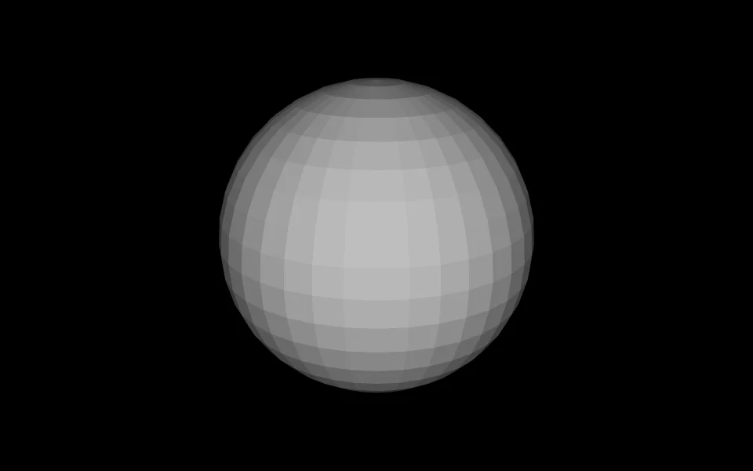
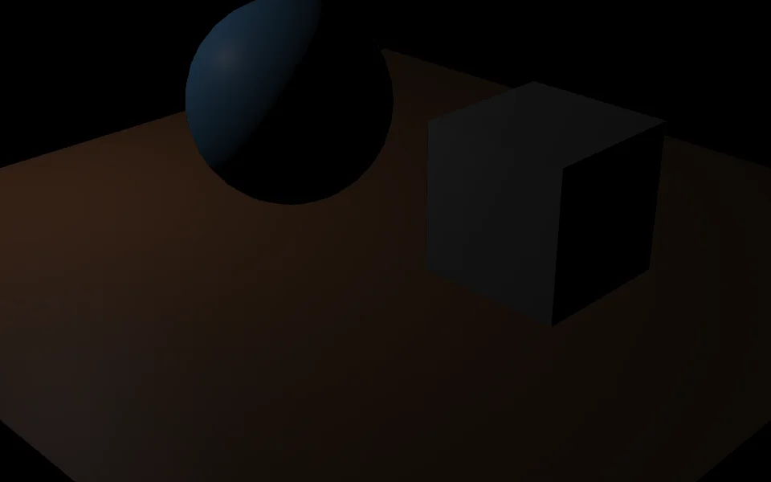
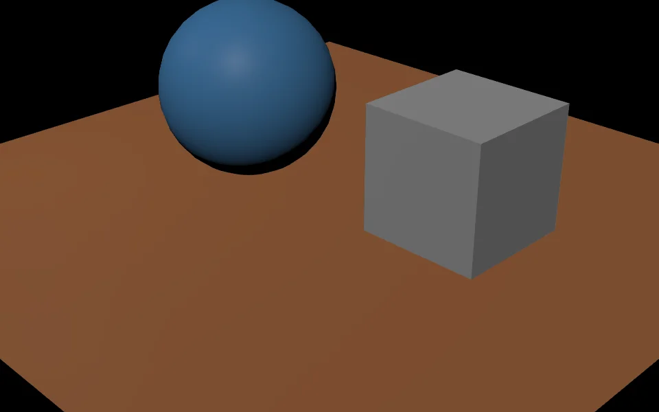
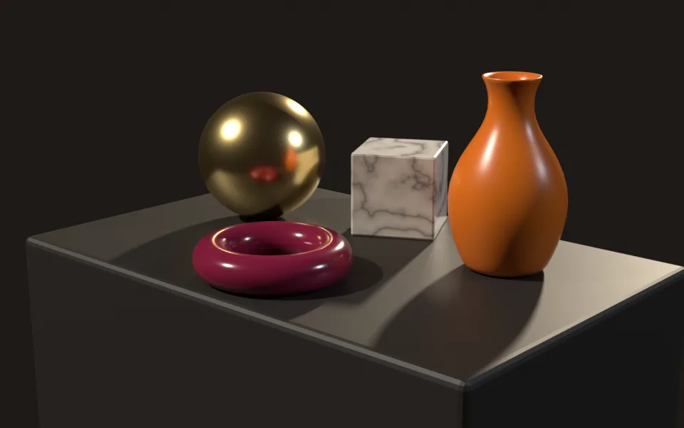
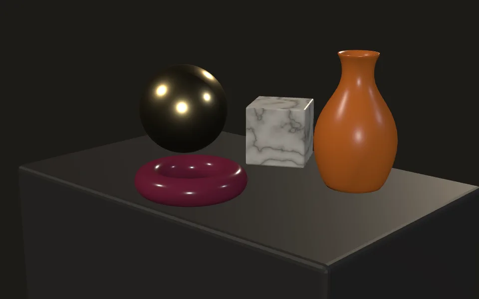

An independent fork of Blender's Web3D X3D add-on that now speaks the whole modern dialect: physically based materials, animation, HAnim humanoids, Gaussian splats, glTF bridges and geospatial grids. It stands on the shoulders of the original, and it keeps score.
Every dot is a real star. The 978 stars within 50 light-years (HYG v4.1), as stored in the X3D 4.1 file this add-on reads and writes. Drag to turn it.stars-splats.x3d
The scoreboard
Numbers that name their tool.
Tap a tile for its receipt. “Fork point” is commit 7f8c0fb of 8 October 2026: the upstream extension 2.5.1 with its April 2026 X3D 4.0 parser rewrite. Everything after it is this fork.
9 of 9 CI checks on every PR: Blender 4.5.14, 5.1.2 and 5.2.2 headless, the bpy wheel, two Python versions, the 194-case export conformance suite, GitGuardian.
Live, in your browser
Real X3D files, running right here.
No video, no screenshots once you press play: each scene below is an X3D file from this repository, rendered by X_ITE 16.7.1 from a CDN. Orbit, zoom, break it.
poster · press play for the live scene
Before / after
Drag. The difference is the point.
Three things this fork changed that you can see without reading a line of code.
nothingunsupported type GeoElevationGrid a 132-byte glb, no geometry

fork pointnow
GeoElevationGrid and GeoViewpoint. The Geospatial component was skipped; the Showcase's earth and moon imported as empty scenes. Built in float64 as X_ITE builds it, checked against PROJ. Mean error against X_ITE 50.8 → 5.16.


lights lostlights kept
Lights that actually light. Exported lights were written without global="true" and lit nothing outside their own group. One attribute, an entire scene.


Blender CyclesX3D 4.1 in X_ITE
Blender to browser, round trip. A Cycles render, then the same scene trained into splats and exported as X3D 4.1: SSIM 0.905, ΔE2000 4.50 against the Cycles frame (Blender 5.2.2, X_ITE 16.4.3; see the research showcase).
What it does
The whole X3D 4 dialect, both directions.
Blender is where scenes get made; X3D 4 is what browsers, validators and AI tools agree to read. This add-on is the bridge, and it checks its own work.
Export
Physically based, on purpose
Principled BSDF becomes PhysicalMaterial with glTF-style texture slots; emission-only trees become UnlitMaterial; one Shape per material, shared data written once with DEF/USE.
X3D Version selector: 3.3 classic stays default.
Import
Reads what browsers draw
PBR to Principled node trees, Switch shows only its chosen child, Geometry2D, IndexedQuadSet, TwoSidedMaterial, textures with alpha, ElevationGrid with colours.
Smooth spheres, cones and cylinders; X3D's Blinn-Phong specular mapped to roughness.
Animation
ROUTEs become keyframes, and back
TimeSensor plus interpolators import as world-space keyframes. Shape keys leave as a CoordinateInterpolator into the Coordinate and return as shape keys.
Also: glb animation time starts at 0 (was 1/24 s late).
Characters
HAnim 2.0 humanoids
Armatures export as HAnimHumanoid with joint hierarchy, skinned meshes and weights; HAnim imports into an armature with bones, vertex groups and pose-bone animation.
Splats
Gaussian splats, native and exact
The draft X3D 4.1 GaussianSplats node writes and reads, and Blender 5.3's native splat point clouds (from PLY, SPZ, glTF, USD importers) export straight to it. X_ITE renders a 500,000-splat scene this exporter wrote.
20,000 degree-3 splats export and import bit-exact · files of ~18,000+ splats used to import as nothing (Expat 2.6) · Blender 4.5 to 5.3.
Geospatial
An earth that imports
GeoElevationGrid and GeoViewpoint in GD, GC, UTM and Web Mercator, on the spec's ellipsoids and X_ITE's solar-system bodies, in float64 with a GeoOrigin.
Checked against PROJ 3.8.0 · vertices within 0.25 m.
Colour
sRGB by default, like X_ITE and Castle
X_ITE 16.7.1 and Castle Game Engine both draw a classic 0.5 as 128. The import now matches, converts once, and the export writes colours back the way they came in.
Light units: As X_ITE draws fits the lights to what the browser shows.
Interop
Inline bridge to glb, PLY, splat
An Empty with x3d_inline_url exports as an <Inline>; Inline imports as that Empty with the asset beneath it: X3D recursively, glTF via Blender's importer, PLY and .splat as splat meshes.
Proof
It checks itself
The X3D 4.0 writer validates its own output. A fidelity rig renders X_ITE on the X3D against Babylon.js on the glb and runs every glb through the Khronos validator.
194-case export suite · Blender 4.5.14 / 5.1.2 / 5.2.2 in CI.
Install
Beside the original
Ships under its own extension id x3d_blender_io, so an upstream update never replaces it. Enable one of the two at a time.
Blender 4.2 or newer.
Bug hunts
Found because we measured.
Each of these was invisible until a number said otherwise. Each is now covered by a test.
315 s → 0.67 s
A relief grid that took five minutes to export
Blender 5.x made indexed corner reads cost time proportional to the collection; the exporter read one per corner. Bulk reads fixed it, with byte-identical output.
0 → 20,000
Splat files that imported as nothing
Expat 2.6 deferred big elements past the point where the reader stopped. Files of about 18,000 splats vanished. Now bit-exact at any size.
0.04 → 0.21
Mid-grey that came in nearly black
Per-vertex colours went through the sRGB curve twice, so a Color of 0.5 imported as 0.04.
1/24 s → 0
Every glb animation started late
The importer puts X3D time 0 on Blender's frame_start, the factory frame 1. The rig now starts at 0: first sample 0.0 s.
crash → 978 stars
A scene one light-year across
Blender inverts matrices in float32, where a 1e-16 scale underflows. The add-on now inverts in float64; the 978 stars load.
÷1.75 → 1×
Lights that dimmed on every round trip
Export divided point and spot energy by 1.75; import forgot to multiply back. Fixed both ways.
Fork point vs now
What changed, stated plainly.
From the release notes and pull requests. “Fork point” is 7f8c0fb, the upstream 2.5.1 code the fork started from.
sRGB as X_ITE and Castle draw; converted once; round-trips
PR #27 #28 #29
Light units
One fixed mapping, 1.75× lost per round trip
As Blender or As X_ITE draws, fitted per scene
PR #28 #30
Large-mesh export
Quadratic: 315 s for 66,177 vertices
Linear: 0.67 s
PR #25
glb quality gate
None
Khronos validator on every glb, manifest per scene
PR #33
Instanced glb
One node per instance
EXT_mesh_gpu_instancing via Group instances
PR #34
Standing on shoulders
Full credit to the original.
This work only exists because a community kept an X3D and VRML2 add-on alive in Blender for more than a decade. The importer, the exporter and the architecture are theirs; this fork extends them and keeps everything upstream still working unchanged.
Upstream: Web3D X3D/VRML2 format on the Blender extensions platform (maintained by Bujus_Krachus; source). This fork is independent and not endorsed by it. Maintained by HagopJay. GPL-3.0-or-later. Written with AI assistance (Claude Code), reviewed and merged by a person.
Try it
Ten minutes to your first X3D 4.1 scene.
# 1. Get the add-on
git clone https://github.com/hagopjay/x3d-blender-io
blender --command extension build --source-dir ./source --output-dir ./dist
# 2. Blender → Edit → Preferences → Get Extensions → Install from Disk → dist/x3d_blender_io-*.zip# 3. File → Export → X3D → X3D Version: X3D 4.0 (PBR) or X3D 4.1 draft (GaussianSplats)# 4. Open the file in X_ITE: https://create3000.github.io/x_ite/